Home › Payments & Invoicing › Stripe Payment Failed? Automatically Alert Your Team and Email the Customer Instantly
Stripe Payment Failed? Automatically Alert Your Team and Email the Customer Instantly
·⏱ 6 min read·Payments & Invoicing
A payment fails in Stripe. The customer never hears from you. Two days later they cancel. This happens constantly — because Stripe logs the failure and moves on, and nobody is watching the dashboard 24/7. This Make.com tutorial shows you how to automate Stripe failed payment alerts — the automation reacts the moment a payment fails: the customer gets an email within seconds, and your team gets an alert. No developer needed, no manual checking.
Why Missed Failed Payments Cost You More Than You Think
Every failed payment that goes unaddressed is a potential churn. Customers don't always know their card failed — they assume you'll reach out. When you don't, they assume the worst and move on. Speed matters: a same-day email from you reads as professional and attentive. A silence that lasts three days reads as a company that doesn't care. The good news is this is completely fixable with a simple automation. Once it's set up, it runs forever.
Yes — but with important limitations that make it the wrong solution for most businesses. Stripe's built-in Smart Retries and dunning emails only work for subscription billing (recurring charges). If you send one-time invoices, Stripe won't automatically email your customer at all. Even for subscriptions, the emails are generic Stripe-branded messages that many customers confuse with spam or phishing. You can't add your logo, your tone, or a direct link to update payment details in your own portal. And critically — your team gets no alert. Nobody on your side knows a payment failed unless they check the Stripe dashboard manually. The automation in this guide solves all of that: it works for every invoice type, sends email from your own Gmail account, and notifies your team the same second it fires.
What This Automation Does
When a payment fails in Stripe, Make.com catches the event instantly and runs three actions automatically: it identifies the customer, sends them a personalized email with their invoice details, and your team can add a Slack alert so someone can follow up if needed.
How the Workflow Runs
Step
What Happens
Tool
1
Stripe detects a failed invoice payment
Stripe Webhook
2
Make.com retrieves the customer name and email
Stripe Retrieve a Customer
3
Customer receives a personalized email with invoice details
Gmail
The whole setup takes about 20 minutes. After that, it runs on its own.
How to Set Up the Automation
Create a Stripe account and add a test customer — open Stripe, go to Billing → Invoices, and create a test invoice. You'll use Stripe's sandbox mode throughout this guide, so no real payments are involved.
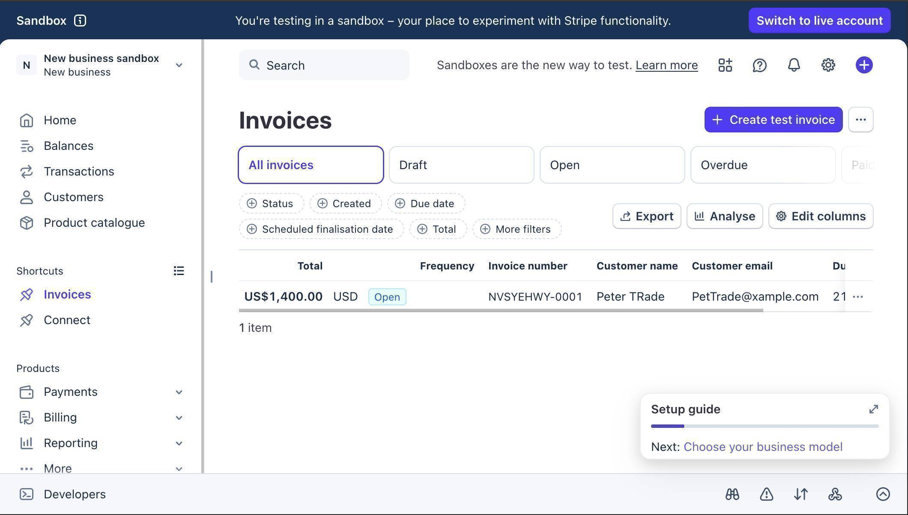Stripe sandbox dashboard showing an open invoice for a test customer
Log in to Make.com and create a new scenario — click the large + button on the canvas and search for "Stripe." Select the Watch Events module. This is the trigger that listens to your Stripe account.
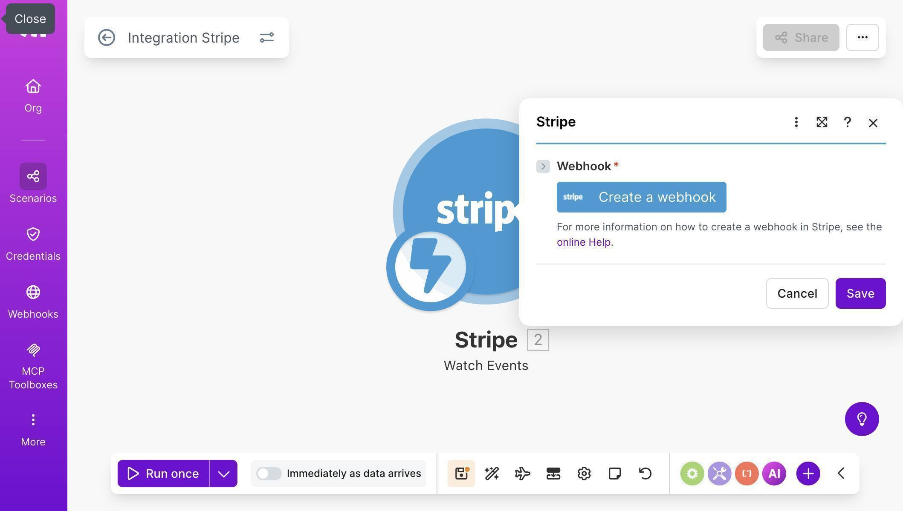Make.com scenario canvas with the Stripe Watch Events module and Create a webhook button
Click "Create a webhook" — Make.com will ask you to connect your Stripe account. Use API Key authentication: copy your Secret key from Stripe → Developers → API keys (it starts with sk_test_ for sandbox). Set the Group to "Invoice" and check "Invoice payment failed" as the event to watch.
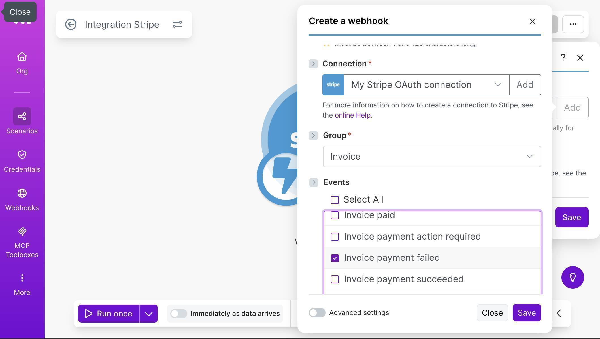Webhook configuration showing Invoice group with Invoice payment failed event selected
Add a filter between your Stripe trigger and the next module — click the line between modules and select "Add a filter." Set the label to "Invoice Payment Failed," the condition to Event Type, the operator to Equal to, and the value to invoice.payment_failed. This prevents the workflow from running on unrelated Stripe events.
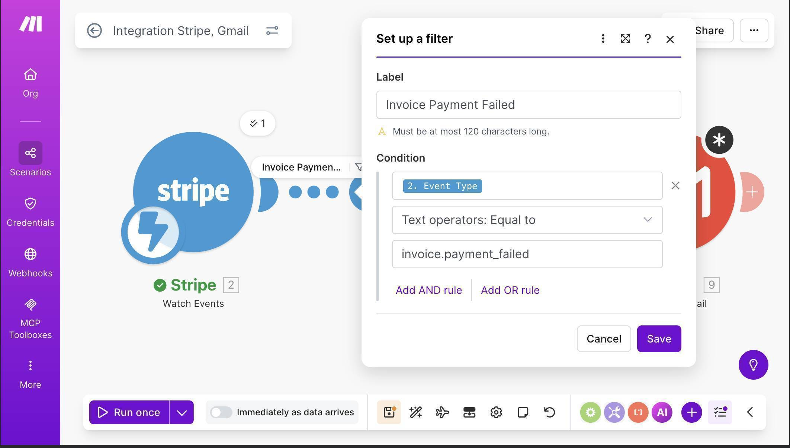Make.com filter setup with condition Event Type equal to invoice.payment_failed
Add a Stripe "Retrieve a Customer" module — click the + button and search for Stripe again. Select "Retrieve a Customer." This step is essential: when Stripe sends a payment failed event, it includes the customer's ID but not their name or email. This module fetches the full customer profile.
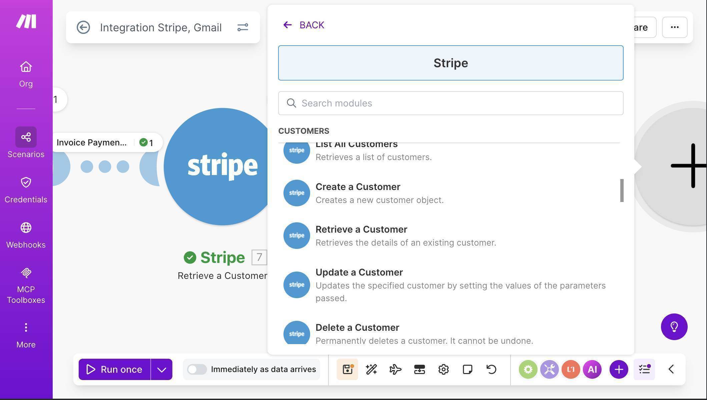Make.com module picker showing Stripe Retrieve a Customer option
Map the Customer ID field to the customer object from your Stripe trigger — in the Retrieve a Customer configuration, set Customer ID to "2. Object: Customer" from the previous module. This tells Make.com which customer to look up.
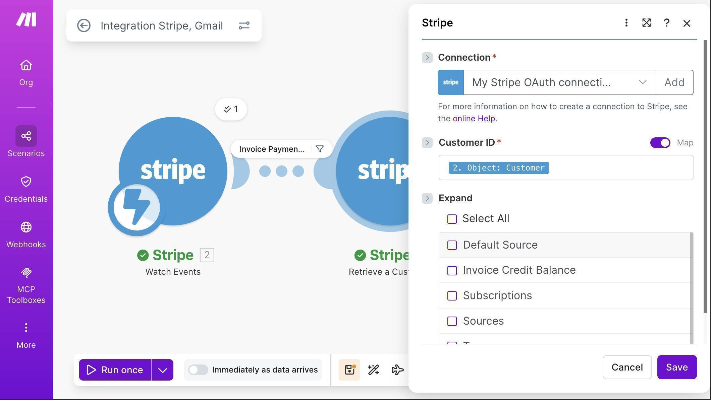Retrieve a Customer module with Customer ID mapped to the Stripe event data
Add a Gmail "Send an email" module — click + and add Gmail. Connect your Google account when prompted. Map the To field to "7. Email" from the Retrieve a Customer module. For the Subject, type "Payment Failed: Invoice" and then map "2. Object: Number" so each email shows the real invoice number.
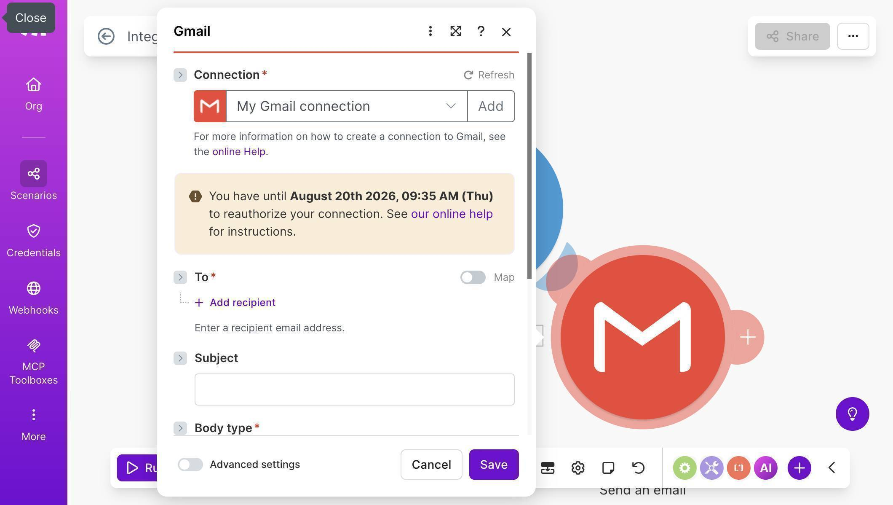Gmail module showing connection setup with To, Subject and Body fields
Map the email body with dynamic fields — in the Body field, write your message and map three fields from Stripe: the customer's name (7. Name), the invoice amount (2. Object: Amount due), and the invoice number (2. Object: Number). The result is a personalized email that looks like it was written by hand.
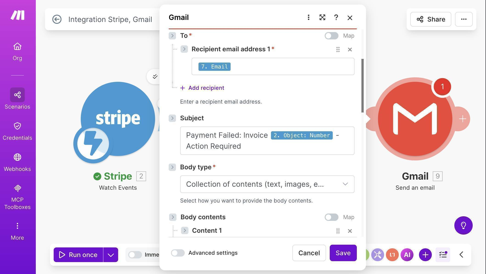Gmail module with To field mapped to customer email and Subject with invoice number
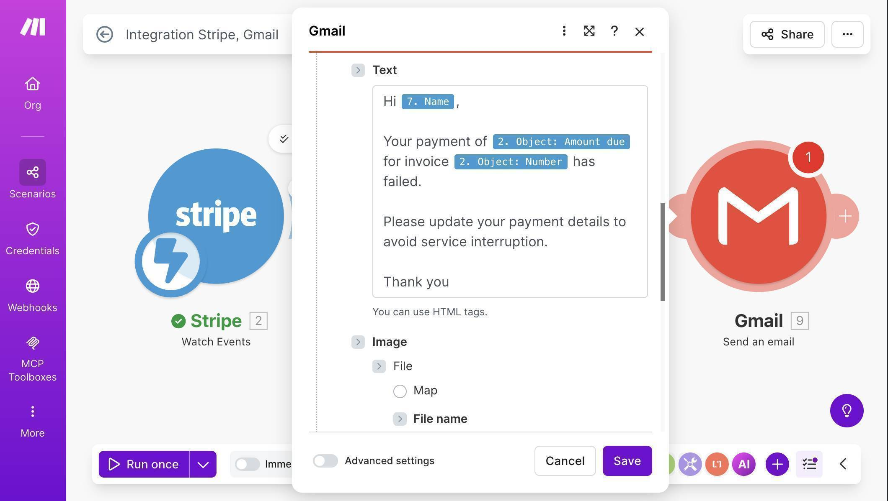Gmail body showing dynamic fields mapped — customer name, payment amount, and invoice number
Save the scenario — your canvas should now show three modules connected: Stripe Watch Events → Stripe Retrieve a Customer → Gmail Send an email.
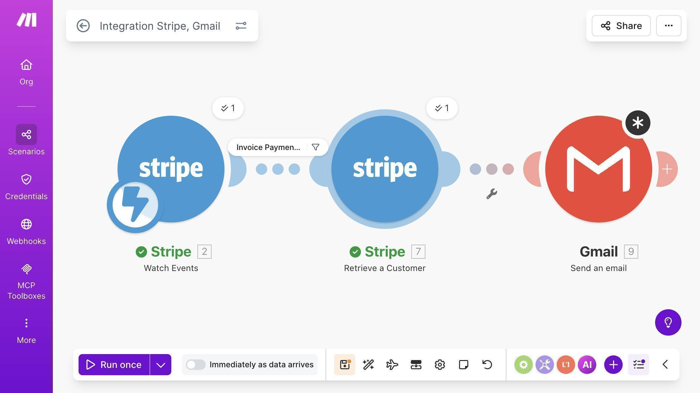Complete Make.com scenario canvas showing all three modules connected
Test the workflow — use the Stripe CLI to send a test event without touching any real data. Run stripe trigger invoice.payment_failed in your terminal. Make.com will process it and send the email to your test customer automatically. If you don't have the Stripe CLI, install it with brew install stripe/stripe-cli/stripe on Mac, then run stripe login first.
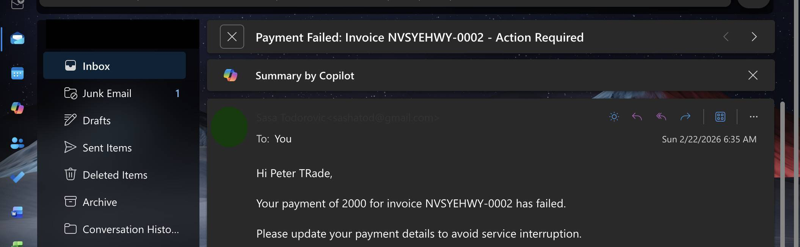Email inbox showing Payment Failed invoice email received instantly with customer name and invoice number
💡 Pro Tip: After the Gmail module, add a Slack "Create a Message" module to alert your billing channel the moment a payment fails. Something like: "Payment failed — [Customer Name], Invoice [Number], Amount: [Amount Due]. Follow up today." Now both the customer and your team know immediately — and someone can pick up the phone if the customer doesn't respond to the automated email.
Bottom line: Failed payments are one of the most preventable forms of revenue loss for small businesses. Stripe's built-in emails only cover subscriptions and arrive as generic Stripe-branded messages — this automation works for every invoice type, sends email from your own account, and alerts your team in the same instant. It takes under 30 minutes to build and runs forever without maintenance.
Frequently Asked Questions
Do I need a paid Stripe account to set this up?
No. You can build and test the entire workflow using Stripe's sandbox mode, which is free. When you're ready to go live, switch to your live Stripe API key and the automation works identically.
What if the same payment fails multiple times?
Stripe sends a new event each time a payment attempt fails. Your Make.com scenario will fire each time, sending a new email. If you want to limit notifications to one per invoice, add a Make.com data store to track which invoices have already triggered an alert.
Does this work for subscription renewals, not just one-time invoices?
Yes. The invoice.payment_failed event covers both subscription renewals and one-time invoice payments. Any failed charge that generates a Stripe invoice will trigger this workflow.
Do I need a paid Make.com plan?
The free Make.com plan includes 1,000 operations per month. Each time this scenario runs, it uses 3 operations — one per module. For most small businesses, the free plan is more than enough to get started.